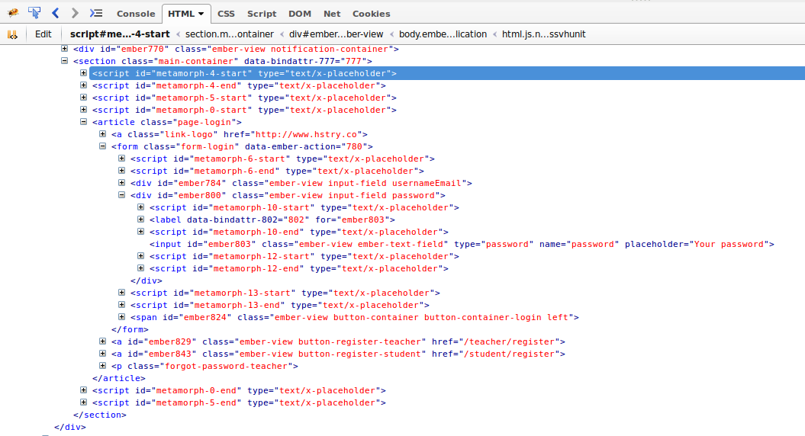

Welcome to meetup #5!

Sponsors
- Hstry beer and organization
- Betacowork Coworking Brussels venue
What has changed in Ember world?
Ember 1.8 released
Incremental introduction of HTMLBars
HTMLBar Chart
No more 1542 <script> tags in your DOM
Caching of camelCase or snake_case operations in lookups
Deprecation of Ember.set
No more {{view App.PostView}} but {{view 'post'}}
didInsertElement is always called on a child view before called on the parent
For more see http://emberjs.com/blog/2014/10/26/ember-1-8-0-released.html
Gradual packaging of existing libraries as ember-cli addons
Interesting stuff
- The Confusion Around Ember Views and Components (reading)
- Ember NYC - Ember vs React (video)
- Ember NYC - Liquid Fire (video)
- A deep dive into the Ember.js runloop (reading)